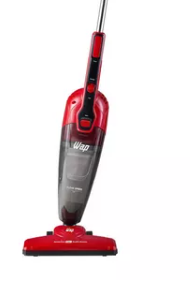
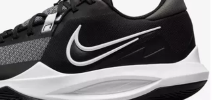

Freio A Disco Hidráulico Gta Bike Mtb Dianteiro E Traseiro
PREÇO: R$179.76
Conheça o Freio A Disco Hidráulico Gta Bike Mtb Dianteiro E Traseiro:
Este freio a disco hidráulico da Gta é de excelente qualidade, sendo uma ótima opção quando se trata de
custo-benefício, proporcionando um bom desempenho e uma boa frenagem.
ESPECIFICAÇÕES:
- Marca: Gta
- Sistema: Hidráulico
- Composição: Alumínio, aço, plástico, fibras
- Posição: Dianteiro e Traseiro
- Comprimento do cabo dianteiro: 90cm
- Comprimento do cabo traseiro: 170cm
- Cor: Preto
- Conteúdo da embalagem: 1 freio dianteiro + 1 freio traseiro + parafusos para caliper
Fone De Ouvido On-ear 520bt Comando De Voz Bluetooth Jbl Cor Azul Cor da luz Azul
Preço: R$229
JBL, uma marca de renome mundial no mercado de áudio, tem sido uma referência há mais de 70 anos pela alta
qualidade de seus produtos. Sua gama de fones de ouvido é variada, pois a empresa oferece produtos in-ear,
over-ear, on-ear, esportes e sem fio. Qualquer um deles é uma boa opção para fazer você desfrutar de sua
música favorita.
ESPECIFICAÇÕES:
Sendo headset você poderá ouvir suas músicas favoritas, manter ligações e jogar on-line sem perder nenhum
detalhe. Conta com bluetooth, sonoridade padrão JBL com desempenho Pure Bass, chamadas viva voz, design
dobrável, leve e confortável, um tempo de reprodução de até 57 horas, carga rápida 5 min = 3 hora de
reprodução, conexão Multipontos e acesso ao aplicativo JBL Headphones Voice Aware.
Bicicleta Aro 29 Krw Alumínio 24 Vel Freio A Disco X42
Preço: R$806.55
A bicicleta KRW X42 foi desenvolvida para quem quer realizar um passeio e pegar trilhas leves. Com seu quadro
em alumínio 6061, fornece segurança e leveza no seu pedal. Possuí diversas cores que garante um estilo
próprio para você.
ESPECIFICAÇÕES:
Quadro em alumínio 6061
Abraçadeira alumínio de selim 31,8mm
Alavancas EZ-fire
Aro aéro 29 pared dupla
Caixa de direção semi-integrado
Câmbio dianteiro importado
Cambio traseiro importado
Pedivela triplo preto
Canote de selim 27.2mm com carrinho
Corrente 8 velocidades index
Cubo rosca com blocagem
Espaçador alumínio 10 mm
Garfo suspensão mecânica
Guidão alumínio 31.8mm
Kit cabo com conduiter
Mesa alumínio 31.8mm
Movimento central rolamentado 122mm
Pedal nylon
Pinça de freio a disco com rotor de 160mm
Pneu 29
Raio 285x2.0mm aço preto
Roda livre 8 velocidades index
Selim mtb.
Lego O Recife De Coral Quantidade de peças 92
Preço R$126.90
Com 90 anos de trajetória, a Lego é um dos principais fabricantes mundiais de materiais de jogo. Para a
marca, o jogo é vital no desenvolvimento de todos os meninos e meninas, pois os ajuda a prosperar num mundo
complexo e desafiante. Seu principal objetivo é inspirar e desenvolver os construtores do futuro, além de
gerar um impacto positivo na sociedade e no planeta. Os brinquedos da Lego oferecem a possibilidade dum
descobrimento permanente, oferecendo a oportunidade mágica de criar algo novo sempre.
ESPECIFICAÇÕES:
O conjunto Lego Minecraft permitirá que você construa e interprete aventuras inspiradas no universo Minecraft
de forma prática com cada um de suas personagens e elementos exclusivos do popular videogame. Você poderá
criar seu próprio mundo adaptando-o às suas habilidades, gostos e formas favoritas.
Diver New Born Bebê Faz xixi Divertoys 8046
Preço R$78.99
Uma amizade fiel
A partir de hoje, toda criança será acompanhada por alguém incondicional, capaz de transformar o mundo em um
lugar encantador.
ESPECIFICAÇÕES:
Personagens inesquecíveis
Com Bebê, as experiências das crianças serão incríveis! Seu design favorece a criatividade e a imaginação.
Aspirador De Pó Vertical 2 Em 1 Clean Speed 1000w Wap Cor Vermelho 110V

Preço R$179.34
Versátil e prático, o Aspirador de Pó Vertical 2 em 1 Clean Speed 1000W Wap é o melhor aspirador de pó
vertical para o seu dia a dia. Leve e portátil, ele possui 1000W de potência e é um produto 2 em 1, que pode
ser utilizado no formato vertical ou como aspirador de mão.
ESPECIFICAÇÕES:
Possui tecnologia Cyclone que aumenta o seu poder de sucção e faz com que a sujeira seja aspirada com muito
mais eficiência. Além disso, é equipado com o exclusivo sistema 360º, que aumenta os ângulos de aspiração e
facilita a limpeza em locais de difícil acesso.
Tênis Nike Precision 6 Masculino

Preço R$569.99
Crie espaço, pare e drible com o Nike Precision 6 FlyEase. Ele foi criado para permitir que jogadores rápidos
mudem de velocidade e de direção, mantendo-se no controle. Desde a boca e a língua macias até o padrão de
tração espinha de peixe modificado, esse ágil tênis de cano baixo permite que você dê o máximo de si
enquanto acelera o ritmo.
ESPECIFICAÇÕES:
A espuma macia na boca e na língua aumenta a sensação de conforto em volta do tornozelo e por cima do pé,
áreas onde você não quer distrações.
Esculpido para a velocidade
A entressola de espuma esculpida é macia e sustentada, proporcionando amortecimento para o movimento
contínuo durante o jogo.
Tração para cortes rápidos
O padrão de tração espinha de peixe proporciona aderência multidirecional, ideal para jogadores que dependem
da rapidez e habilidade de corte. A borracha envolve as laterais no antepé proporcionando tração máxima.
Firme o seu ajuste
O novo posicionamento dos cadarços e os passantes sobre o médio pé ajudam a manter os pés seguros e livres
de distrações.
Mais benefícios
- A boca de cano baixo oferece mobilidade no tornozelo.
- O recorte visível na espuma ajuda a reduzir o peso.
Detalhes do produto
]
- Sobreposições sem costuras
- Etiqueta da Nike na parte de cima da língua
- Logotipo Swoosh moldadO
OBS: TODOS ESE PRODUTOS NÃO SÃO VENDIDOS AQUI, ESSE SITE É SOMENTE PARA ILUSTRAÇÃO. SE QUISEREM COMPRAR ESSES
PRODUTOS CLIQUE NO LINK ABAIXO.